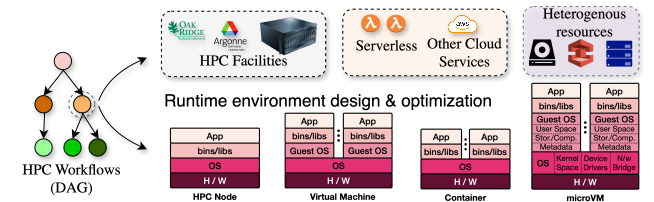
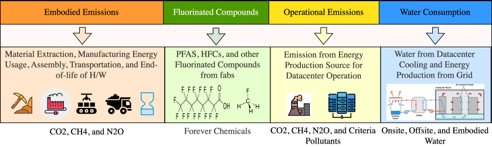
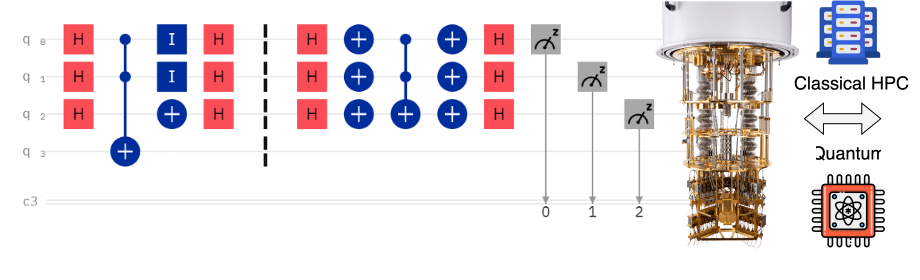

We build scalable systems across the stack: from compiler- and library-level optimizations, runtime systems, to cluster scheduling and control planes, for cloud, serverless, datacenters, and HPC platforms. Our work studies end-to-end resource management across compute, memory, networking, storage, and I/O. We emphasize on scheduling, placement, and performance isolation in multi-tenant settings.
The goal of this research is to develop reusable mechanisms and abstractions that support throughput, reliability, fairness, cost-effectiveness, and efficiency for diverse workloads like inference serving, Agentic AI workflows, microservices and cloud-native workflows, databases, and domain science/HPC applications.

The rise of datacenter energy consumption due to the rise of large-scale computing and AI applications is risking global sustainability. We develop foundational systems that treat sustainability a first-class objective in computing -- spanning across carbon, water, air-quality and public health, biodiversity, embodied and lifecycle effects, and connect these signals to decisions across compute, memory, networking, storage, and I/O stack.
The research spans measurement, modeling and computer systems design. The goal is to produce reproducible models, benchmarks, and frameworks that help large-scale systems optimize for energy consumption and sustainability, alongside with traditional performance-centric metrics.

We build systems and software for emerging hardware and new execution paradigms, with a focus on architecture-aware runtimes, compilers, scheduling, and resource allocation. We target platforms where new constraints and interfaces reshape system design. These include heterogeneous accelerators, new memory, and interconnect technologies.
For example, we are exploring quantum computing at the resource management and compiler layer. The research includes compilation, noise- and hardware-aware scheduling, and mapping for hybrid HPC–quantum workflows. We also study non-traditional execution settings such as intermittent and extreme-edge environments like low-earth-orbit computing, and develop runtime and resource-management policies
Mobirise website builder - Find out